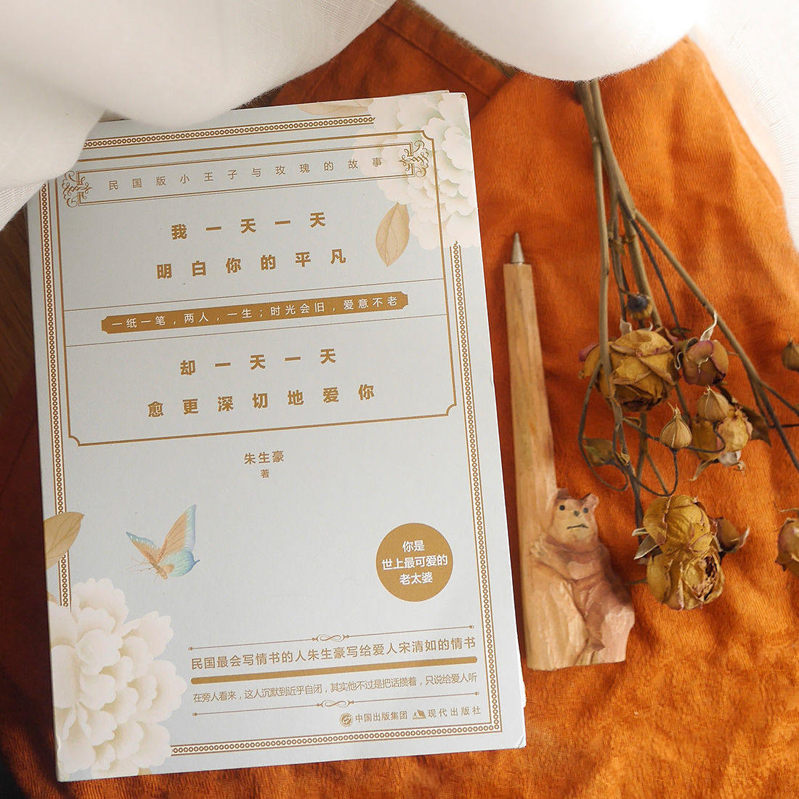

我想要在茅亭里看雨、假山里看蚂蚁，看蝴蝶恋爱，看蜘蛛结网，看水，看船，看
云，看瀑布，看宋清如甜甜的睡觉。
我觉得我已跟残废的人差不多了，五官（想来想去只有四官，眼耳口鼻之外，还有
那一官不知是简任官还是特任官）都 已损毁，眼睛的近视在深起来，鼻子的左孔常出血，
左耳里面近来就睡觉时总要像风车一样轰隆轰隆搧了一阵，嘴里牙 齿又有毛病，真是。
一切兴味索然，活下去全无指望，横竖顶多也不过再有十年好活，我真不想好好儿
做人，恨起来简直想把自己狠狠地糟蹋一阵。
